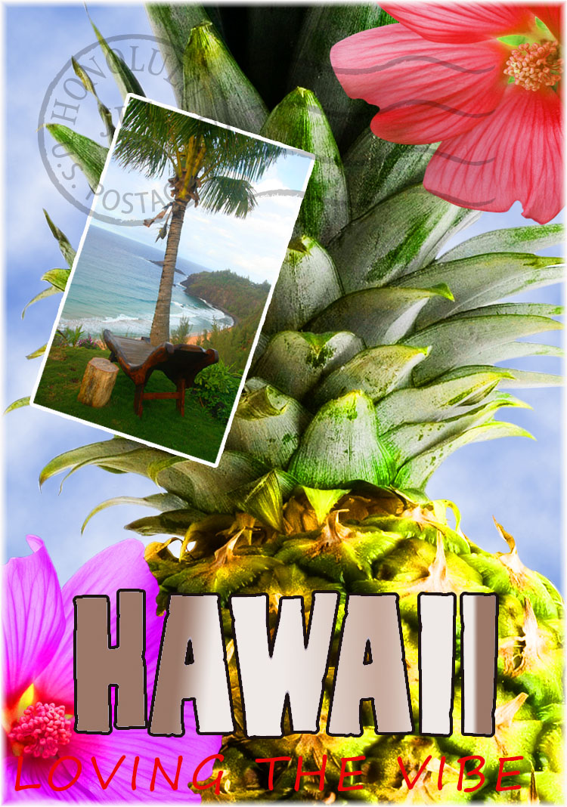
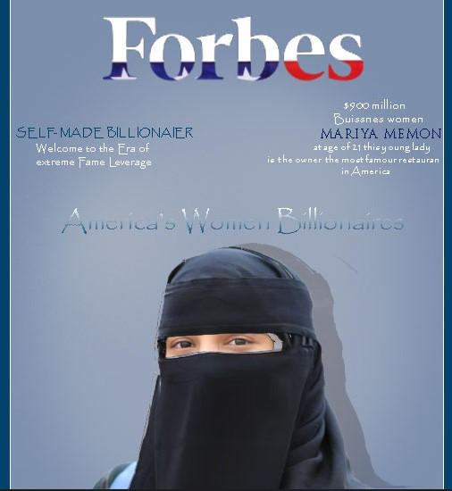
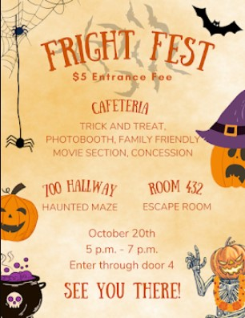
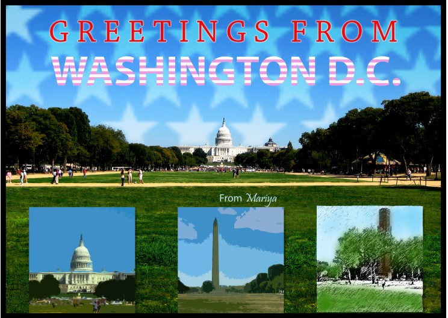

This is my postcard, which I created by combining several photos into a single one.
It's a postcard that will bring back memories of summer or spring. As in Hawaii, where you're sitting by the water with a pineapple and a bunch of flowers.
Adobe Photoshop was used to create this. I modified the opacity, added a few filters, and added more content and other elements to make this.
My Magazine cover

On this magazine cover, I am presenting myself as I will be in 20 years. What will I be doing there, why I would be, and for what? How will I appear? Adobe was a tool used to create this. I chose Forbes as my headline magazine because I believe it to be the most well-known news source ever. Especially for the wealthy. I chose this one in order to demonstrate my future wealth. What I'll have gained.
My first Gif
This was the first gif I had ever created. It was an assignment I created with my teacher. Technically, I carry out his directions. Dragonball-Z was used for my main theme of my GIF. I came across a few pictures of adorable Gohan at a young age. I looked for pictures of him that looked similar like it is not too elderly or too young. So everything can truly run smoothly there. I was able to discover new techniques and ideas after completing this practice gif.
flyer

As a member of the Red Cross club, I made this flyer for our school's Fright Fest. I was chosen to create this flyer with my friend so that we could hang it about the building and let people know things like where it is, when it is, how much it costs, et so on.
We used canvas to create it. We went for a hallween theme amd autumies monty ways; by using oranges litest brown which made the background color. we added few things like the pumkin and then the spider web, spider etc.
We tried using pargraph styling which helped us make our text get the center attention. We started putting all toghthere and at the end it was ready.
My Advanced Compositing & Painting

This was our Advanced Compositing & Painting which was made by using mutipul pictures. This image represented USA and the few main things like the monument, the capital building and many more. I made this in Adobe photoshop.I used different fil;ter for all 3 small images. We added stripes on our text. We added stars on our background image on the top back.This was our Advanced Painting and Compositing that we created with Multiple images. This picture stands for the United States of America and a few important components, including the capital building and monument. I created this using Photoshop. For each of the three tiny photos, I employed a different filter. We customized our text with stripes. On the upper rear of our backdrop image, we added stars. This picture depicts the USA.